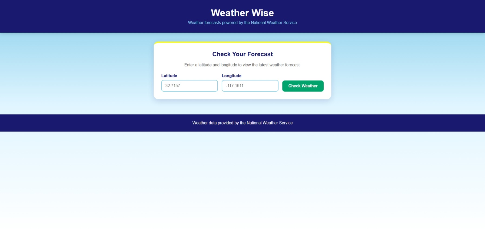
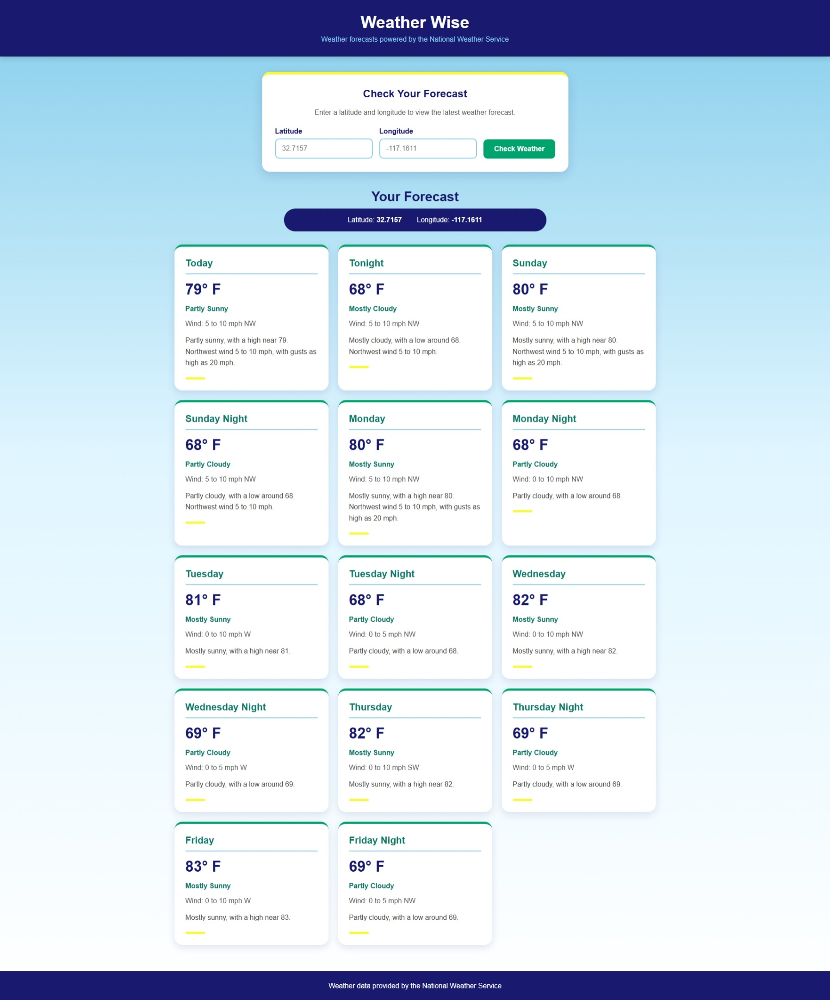

Java
Java handles the application's core logic, API response models, and forecast data processing.
Java Application Development
A responsive Java and Spring Boot weather application that retrieves location-based forecasts from the National Weather Service through REST API integration.
Overview
Weather Wise was developed as a Java and Spring Boot project focused on consuming a public REST API and presenting the returned information through a user-friendly web interface.
Users enter latitude and longitude coordinates. The application sends those coordinates through the National Weather Service API workflow, processes the returned forecast information, and displays the resulting weather data in the browser.
The project gave me hands-on experience connecting front-end interfaces, Java application logic, and external web services within one application.
Technical Stack
Java handles the application's core logic, API response models, and forecast data processing.
Spring Boot provides the application framework and manages configuration, startup, routing, and the local web server.
The MVC architecture separates application logic, data handling, controller behavior, and the user-facing interface.
The application communicates with the National Weather Service API to retrieve location-specific forecast data.
Semantic HTML and responsive CSS provide a clear browser interface for coordinate input and forecast results.
Maven manages dependencies and supports building and running the Spring Boot project.
Application Flow
Retrieving a forecast requires more than sending a city name to a single endpoint. Weather Wise uses geographic coordinates to locate the correct National Weather Service forecast endpoint before requesting the forecast itself.
The user enters latitude and longitude values into the Weather Wise search form.
The application sends the coordinates to the National Weather Service points endpoint.
The API response identifies the forecast URL associated with the requested coordinates.
The application sends a second API request to retrieve the forecast information for that location.
Java models process the API response and the resulting forecast information is rendered through the web interface.
User Interface
The interface was designed to make the application approachable rather than presenting raw API data. Location inputs, forecast information, and weather details are organized into a clear, responsive layout.


Development Challenges
Building the application required troubleshooting multiple layers of the development environment, including the Spring Boot server, API communication, project configuration, and browser output.
One challenge involved resolving local server port conflicts while testing the application. Identifying the process using the configured port and correcting the development environment helped strengthen my understanding of how Spring Boot applications run locally.
Problem Solving
Testing & Validation
Tested valid latitude and longitude coordinates to confirm the application correctly requests geographic forecast information.
Verified that forecast data returned by the National Weather Service could be processed and displayed by the application.
Troubleshot Spring Boot startup behavior and resolved local port conflicts during testing.
Reviewed the interface at multiple screen sizes to maintain readability and a clear content hierarchy.
What I Learned
This project strengthened my understanding of how front-end interfaces interact with server-side application logic and external services.
Working with Spring Boot and the National Weather Service API gave me practical experience tracing data through an application, debugging problems across multiple layers, and converting structured API responses into information that is useful to the user.
It also reinforced the value of combining software development with thoughtful interface design. Functional applications are more effective when technical information is presented in a clear and approachable way.
Outcome
The completed application connects a responsive browser interface to a Java Spring Boot backend and retrieves live forecast information through the National Weather Service API.
The project demonstrates experience with Java, Spring Boot, Spring MVC, REST API integration, Maven, debugging, responsive web development, and the connection between interface design and application functionality.